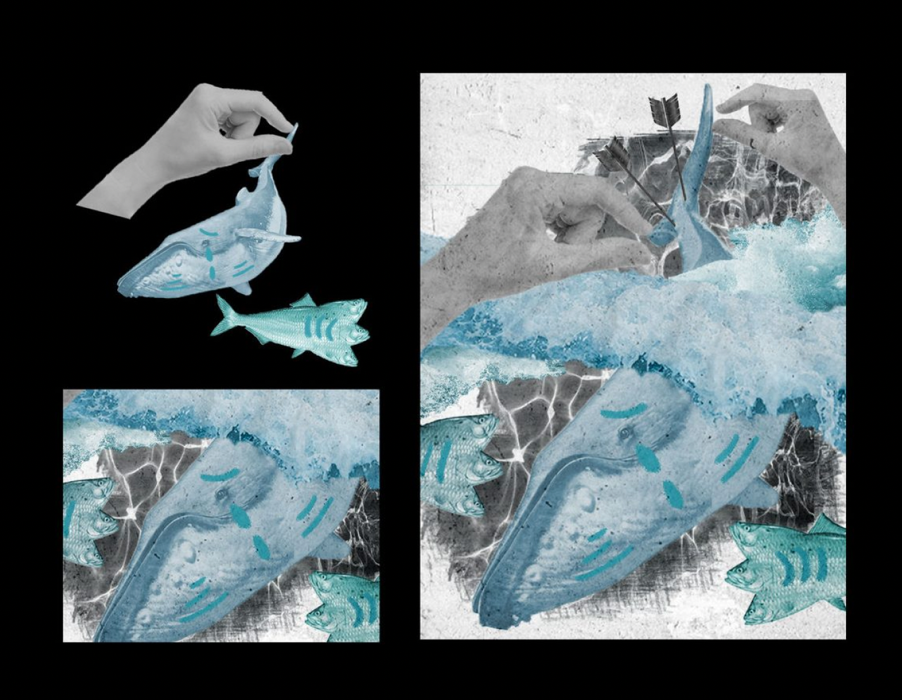

This project is about 3 folk games of Vietnam: Bau Cua, Lo To and Ca Ngua. All three types are associated with Vietnamese traditional Tet as they are gambling games and entail fortune. These games gradually become a traditional part of Vietnamese Tet.
This theme uses Covid to address air pollution. Viral protein spikes and emergencies are dark red. The virus's impact on Earth was widespread. The hands symbolise human destruction on Earth. The chainsaws and gray backdrop suggest that destroying trees contributes to climate change.
Nearly every Atlantic whale was killed for food and resources. Now, their contaminated environments threaten them. Blue symbolizes whales and their sea. The gray backdrop represents pollution and the dying sea. The polluted waters caused the three-headed fish to mutate. Humans abusing the water symbolized by the hands.
This project displays my love for Vietnamese cuisine, especially street food. Vietnamese snacks, Saigon in particular, possess the traditional beauty of Vietnamese culture. This project aims to create stickers so that I will be reminded of Vietnamese food and the country Vietnam wherever I go and stick them on.
Working as a social media manager, I created a key visual and branding for VELA - an academy that provides English and study abroad services in Vietnam.
.png)
.png)
.png)
.png)